5위 피터 레벨스: 혼자서 한 달 2억 원
영상은 AI로 큰돈을 번 직원 10명 미만 회사 다섯 곳을 덜 번 곳부터 차례로 보여 줘요. 곳마다 "이거 한국에서도 될까요?"를 따져 보는데, 미리 말한 답은 그대로 되는 곳이 둘뿐이라는 거예요. 첫 번째는 네덜란드 개발자 피터 레벨스예요.
세 시간 만에 만든 게임, 돈은 광고판에서
작년 2월, 레벨스는 AI 코딩 프로그램에 말로 일을 시켜 비행기를 모는 웹 게임을 세 시간쯤 만에 만들었어요. 17일 뒤 그가 SNS(Social Networking Service)에 올린 연환산 매출은 우리 돈 약 13억 5천만 원이었어요. 그런데 이 돈은 게임을 팔아서 번 게 아니었어요. 아래 화면처럼 '게임 판매 수입'에 줄이 그어지고 '화면 속 기업 광고판'이 남아요. 게임 하늘에 광고판을 세우고 그 자리를 기업에 판 거예요. 전투기도 팔았지만 다 합쳐 360달러뿐이었어요.
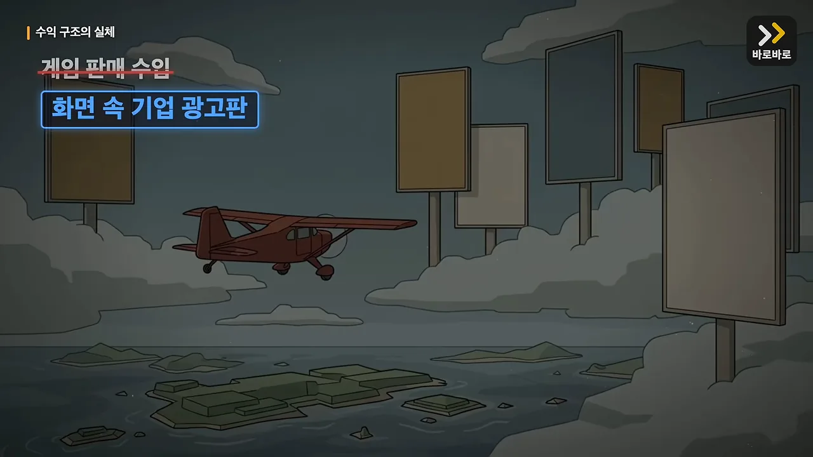
세 시간짜리 게임이 이만큼 번 비결은 따르는 사람이었어요. SNS에서 레벨스를 따르는 사람이 50만 명이 넘어요(2024년 어느 집계 기준). 만든 걸 올리면 그 사람들에게 바로 알릴 수 있는 거죠.
1년 뒤 남은 건 구독 쪽이었어요
레벨스의 진짜 돈벌이는 따로 있어요. 혼자 굴리는 AI 사진 서비스예요. 손님이 매달 구독료를 내고 쓰는데, 작년 가장 많이 번 달엔 약 2억 원, 올해 중반엔 약 1억 3천만 원이 들어왔어요. 모두 본인이 SNS에 공개한 숫자예요. 반면 게임은 올해 중반 한 보도에 따르면 프로필에 수입 0달러로 적혀 있었어요. 아래 화면 왼쪽의 '사진: 다달이 구독료'와 오른쪽의 '0달러'가 그 대비예요.
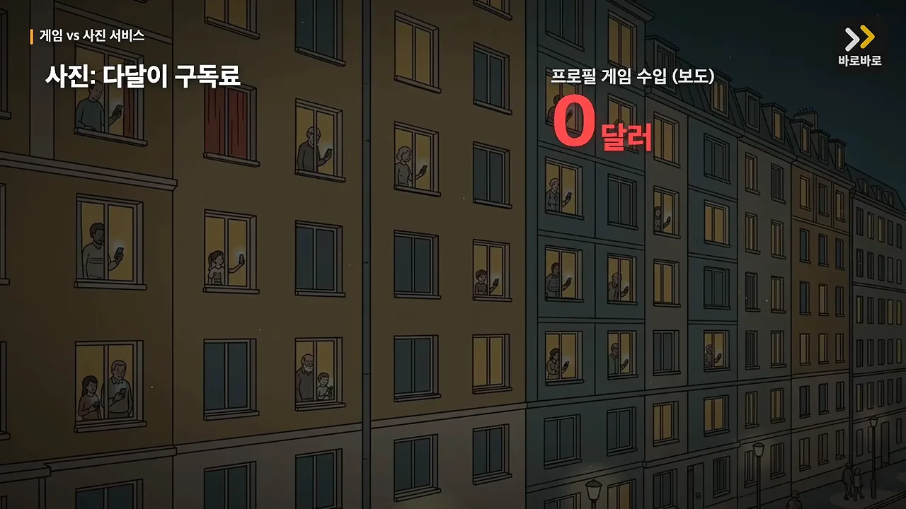
게임 광고판도 달 단위로 팔았지만, 광고주가 다시 사지 않으면 그걸로 끝이었어요. 사진 서비스는 손님이 다달이 내니 계속 돌아가고요.
따르는 사람 없이 만들기만 하면
영상은 반대쪽 숫자도 보여 줘요. 한 프리랜서 일감 중개 사이트의 올해 보고서예요. 막대 두 개를 보면 AI로 하는 창작 일은 계약 건수가 90% 늘었는데, 한 건에 받는 수입은 13% 줄었어요. 누구나 만들 수 있게 되자 만드는 값이 내려간 거예요.
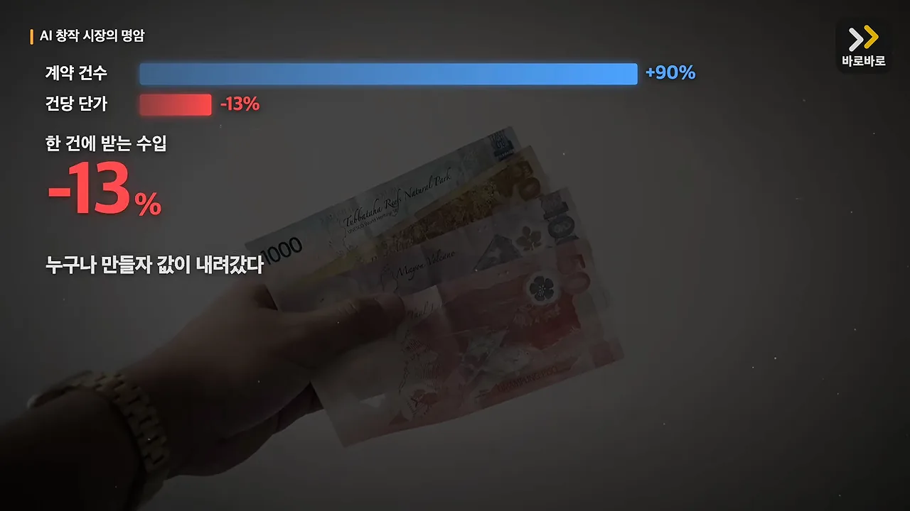
여기서 영상 전체를 꿰는 한 줄이 나와요. 유리 덮개 속 빨간 종이비행기 한 대와, 탁자 위에 마구 쌓인 하얀 종이비행기가 이 말을 그림으로 보여 줘요. 만드는 데는 세 시간이면 됐지만, 따르는 사람 50만 명은 그렇게 모이지 않아요.
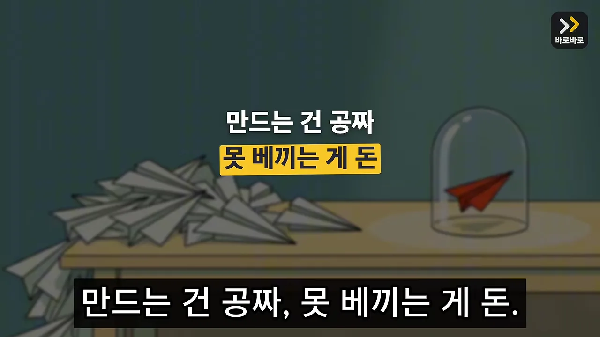
만드는 건 공짜, 못 베끼는 게 돈.
— 영상 02:46
한국 판정: 돼요, 단 알릴 사람이 있어야 해요
만드는 일은 한국에서도 똑같이 할 수 있어요. 막히는 건 기술이 아니라 알릴 사람이에요. 봐 줄 사람이 없으면 같은 걸 만들어도 벌지 못할 수 있다는 게 영상의 판정이에요.
4위 폴시아: 직원 0명이 굴리는 회사
다음은 직원이 아예 한 명도 없는 회사예요. 올해 7월 미국 경제 신문에 실린 폴시아예요. 창업자 말고 정규 직원이 없고, 법률 일과 전산 설비만 바깥 업체에 맡겨요.
회사를 대신 굴려 주는 구독 서비스
폴시아가 파는 건 'AI 공동창업자'라고 부르는 구독 프로그램이에요. 화면 왼쪽 줄을 보면 제품 개발은 '자동 코드 작성', 오류 수정과 손님 응대는 'AI가 응대'로 적혀 있어요.
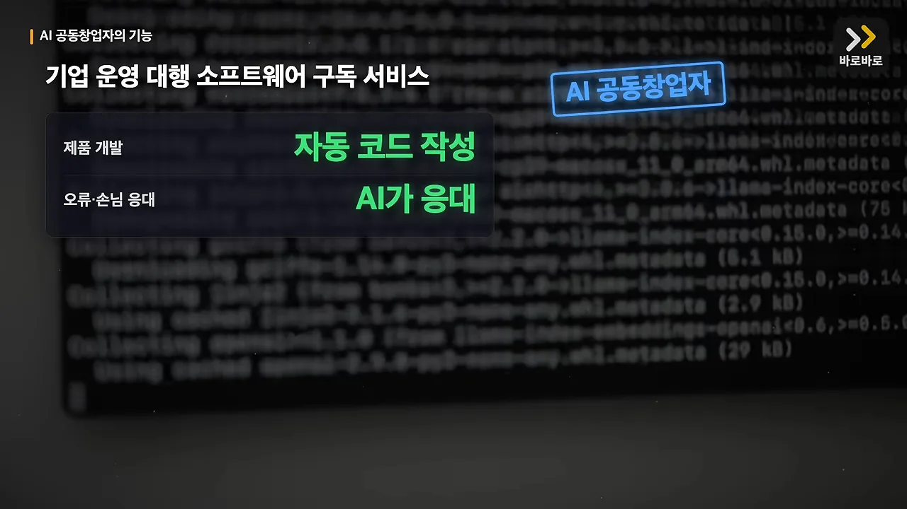
다음 화면에는 마케팅은 '광고 집행 자동화', 일일 보고는 '야간 메일 발송'이 이어져요. 밤마다 하루를 정리한 메일까지 AI가 보내는 거죠. 오른쪽 숫자는 돈 내는 손님 1만 명, 회사가 내다본 올해 매출 135억 원이에요.
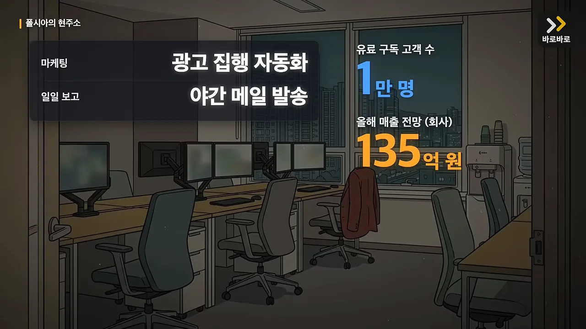
올해 3월 한 경제지가 전한 연환산 매출은 이 전망의 절반이 안 됐어요. 몇 달 만에 두 배 넘게 큰다는 전망인 셈이에요. 투자금은 약 404억 원을 받았다고 보도됐어요.
폴시아만의 일이 아니에요
같은 기사엔 한 온라인 결제 회사의 자료도 있었어요. 그 회사를 거치는 1인 사업자 중 매출 100만 달러를 넘긴 곳이 몇 해 새 두 배가 됐대요. 국내 기사가 소개한 연구도 있어요. 미국의 한 경영대학원 교수가 스타트업 5만 곳을 봤더니, AI를 중심에 둔 곳은 직원이 더 적었어요. 내레이션은 25%쯤이라고 하고, 화면에는 -24%로 적혀 있어요.
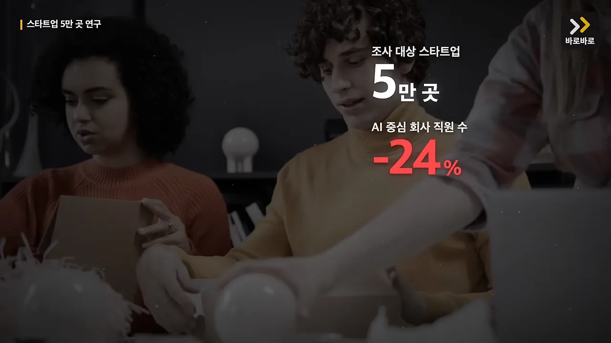
직원이 없어도 AI 값은 나가요
폴시아 창업자에게도 고민이 있었어요. 처음엔 유료 AI를 썼는데, 일부 손님에게선 오히려 손해를 봤어요. 그래서 무료로 풀린 중국산 AI 프로그램으로 바꿨어요. 아래 화면 제목이 핵심이에요. '손님이 늘면 AI 값도 는다', 그리고 직원 인건비 칸은 0원이에요.
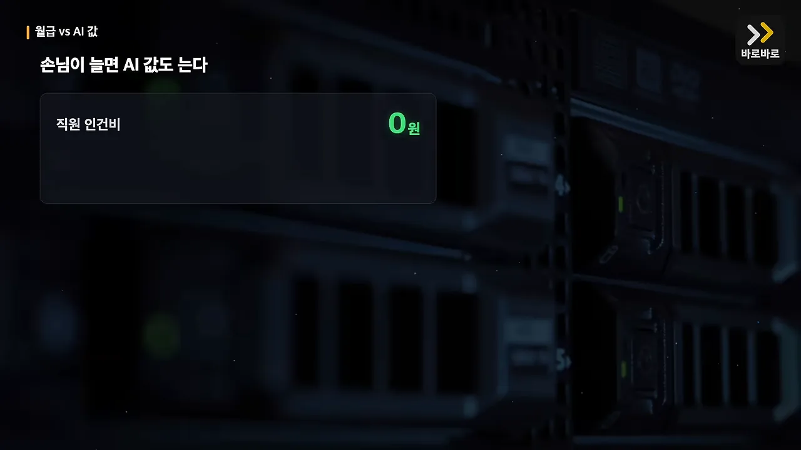
한국 판정: 조건이 붙어요
이런 서비스를 만드는 것까지는 한국에서도 돼요. 문제는 남의 AI를 빌려 쓰는 값이에요. 그 값이 손님 한 명에게서 버는 돈보다 클 수 있으니, 시작 전에 계산부터 해야 하는 사업이라는 거예요.
3위 칼 AI: 고등학생 둘이 연매출 404억 원
3위는 고등학생 둘이 만든 앱이에요. 미국 고등학교 마지막 학년인 17살 학생이 칼로리를 세고 있었는데, 이유가 남달랐어요. 살을 빼려는 게 아니라 거꾸로 살을 찌우려고 셌거든요. 다른 고등학생과 둘이서 음식 사진을 찍으면 칼로리가 계산돼 나오는 앱을 만들었고, 2024년 5월 칼 AI라는 이름으로 내놨어요.
출시 2년이 안 돼 연매출 404억 원
칼 AI를 사들인 회사가 숫자를 밝혔어요. 다운로드는 1,500만 번이 넘어요. 화면 오른쪽 위를 보면 연매출은 3,000만 달러 이상, 원화로 404억 원 넘게예요. 사들일 때 직원은 일곱 명이었어요.
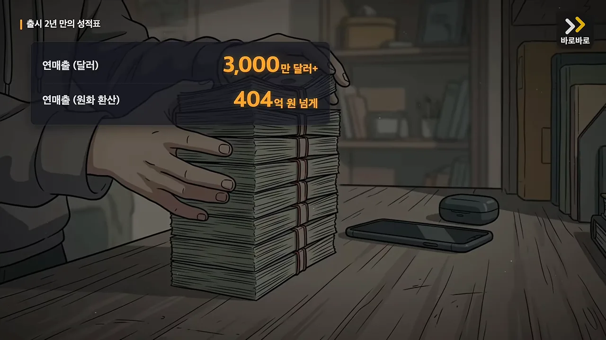
사들인 쪽은 다이어트 앱 회사예요. 작년 12월에 거래를 마쳤고 값은 밝히지 않았어요. 사들인 뒤에도 칼 AI는 따로 굴러가요. 팀도 그대로고, 그 학생이 여전히 대표예요.
인플루언서 250명에게 매달 돈을 줬어요
이렇게 빨리 퍼진 방법은 단순했어요. 창업자 인터뷰에 따르면 SNS에서 따르는 사람이 많은 인플루언서 약 250명에게 매달 정해진 금액을 주고 칼 AI를 소개하게 했어요. 팔린 만큼 떼어 주는 방식이 아니라 정액이었다는 점이 화면의 두 번째 줄 '매달 정해진 금액'이에요.
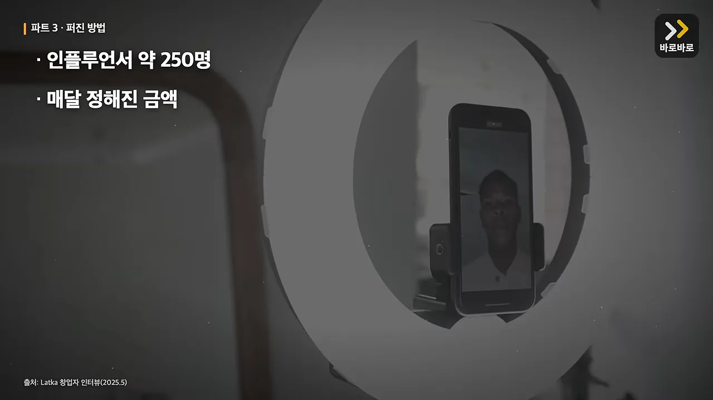
영상은 돈을 만든 걸 둘로 정리해요. 자기가 직접 겪은 문제, 그리고 알리는 데 쓴 돈이에요. 칼로리 앱은 누구나 만들 수 있지만, 살을 찌우려고 칼로리를 세던 경험은 따라 할 수 없어요.
한국 판정: 돼요
국내 사례도 있어요. 한 경제신문이 올해 9월 소개한 1인 개발자는 게임 회사에서 일해 본 적이 없는데, AI를 써서 두 달 만에 첫 게임을 냈어요. 화면의 세 숫자가 그 성적이에요. 제작 기간 2개월, 누적 다운로드 3만 번, 일일 이용자 중 일본 비중 19%. 매출은 아직 밝히지 않았어요.
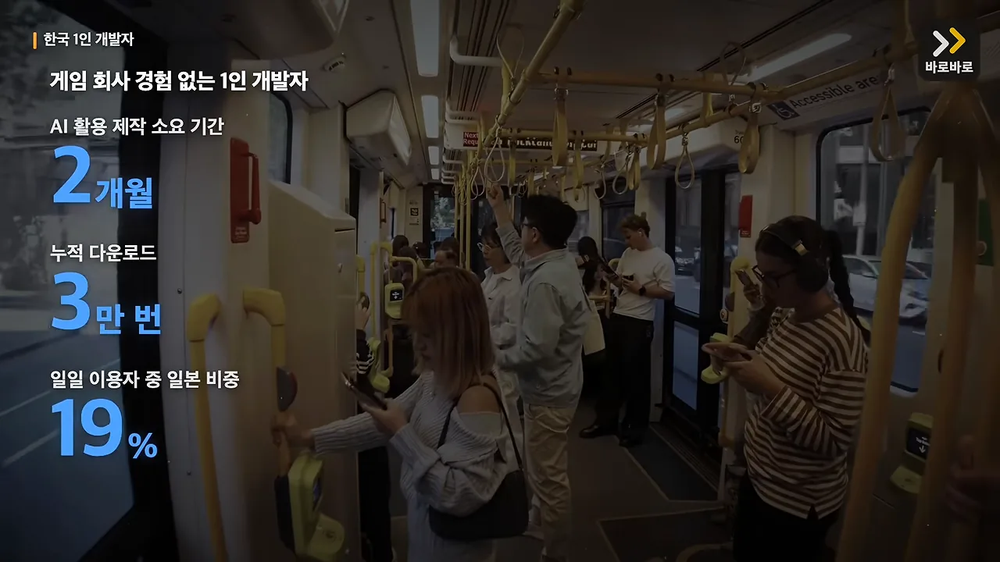
걸림돌은 수수료예요. 다음 화면 오른쪽의 26%는 앱 장터 바깥 결제를 써도 한국에서 내는 최대 수수료예요. 그래도 만들어서 올리는 길은 열려 있다는 게 영상의 판정이에요.
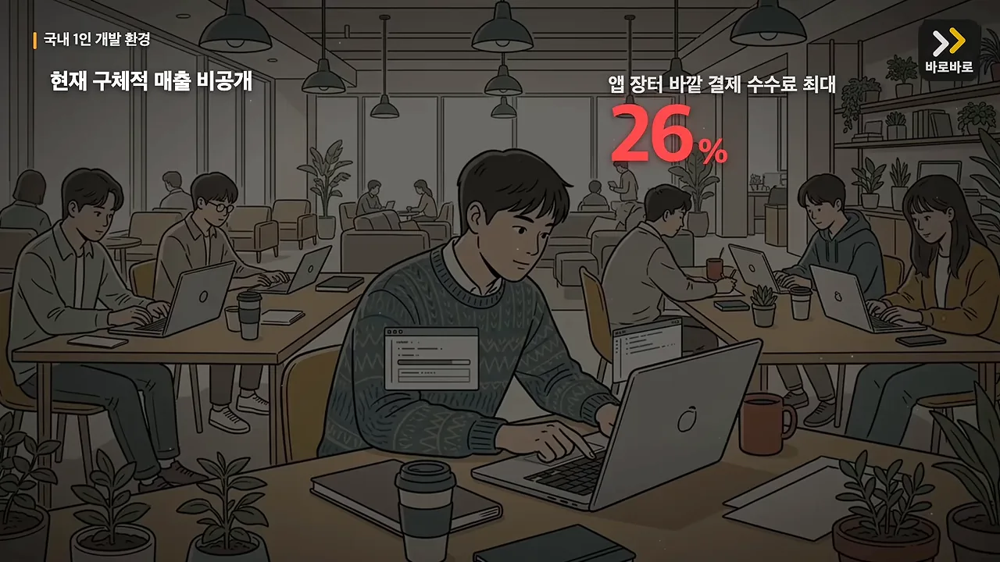
2위 베이스44: 1,076억 원에 팔린 '1인 회사'
여기서 자릿수가 바뀌어요. '혼자 만든 회사가 1천억에 팔렸다'는 이야기인데, 판 날의 숫자를 뜯어보면 좀 이상하다는 게 영상의 출발점이에요.
만든 지 6개월, 전액 현금 1,076억 원
작년 6월 홈페이지를 만들어 주는 한 회사가, 만든 지 6개월 된 곳을 사겠다고 발표했어요. 화면 오른쪽 숫자가 값이에요. 매각 대금 1,076억 원, 전액 현금. 팔린 곳은 말로 시키면 앱을 만들어 주는 AI 도구 베이스44예요. 창업자는 이스라엘 개발자로, 부업으로 혼자 시작했고 투자도 받지 않았어요. 그날 기사 제목도 '혼자 소유한 곳'이라고 불렀어요.
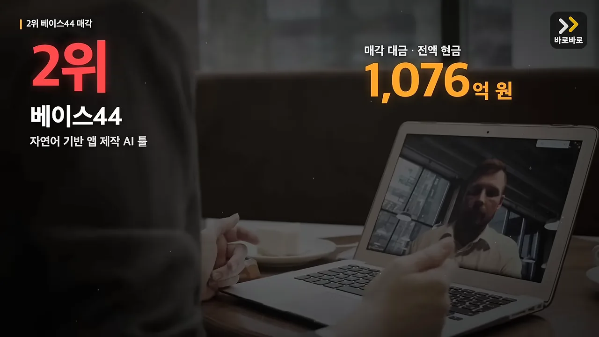
같은 기사엔 한 달 이익도 있었어요. 작년 5월, AI 값을 다 내고도 약 2억 5천만 원이 남았어요. 영상은 이걸 한국 정부 실태조사의 숫자와 나란히 놓아요. 한국에서 직원 없이 꾸리는 작은 사업체는 1년에 평균 3,620만 원을 남기는데, 베이스44의 한 달 이익이 그 일곱 배예요.
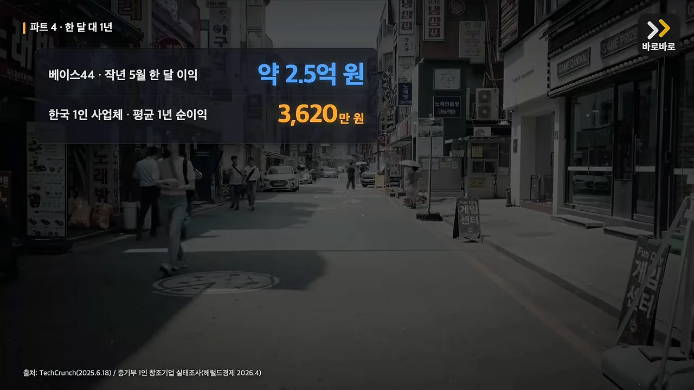
'혼자'라는 말은 반만 맞아요
판 돈은 창업자 혼자 다 가졌을까요? 아니었어요. 화면 위쪽의 사람 아이콘 여덟 개가 판 날 실제 직원 수예요. 사들인 쪽이 직접 확인한 숫자이고, 발표 바로 전 달에 뽑은 사람이 많았다는 보도도 있어요. 오른쪽 336억 원은 직원들 몫이에요. 회사에 남는 조건으로 나눠 받는 리텐션 보너스로, 전체 값의 3분의 1에 가까워요.
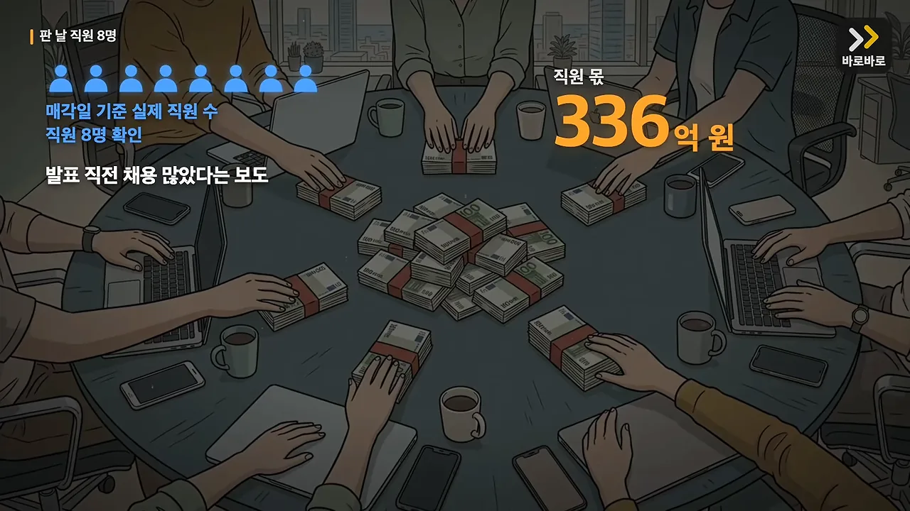
진짜 반전은 판 다음이에요
올해 8월 창업자가 새 기록을 공개했어요. 화면 오른쪽의 연환산 매출 2,690억 원이에요. 판 값의 2.5배를 1년에 버는 속도예요. 이제 이 매출은 사들인 회사의 몫이고, 보도로는 지금 그 회사의 성장을 베이스44가 이끌고 있어요.
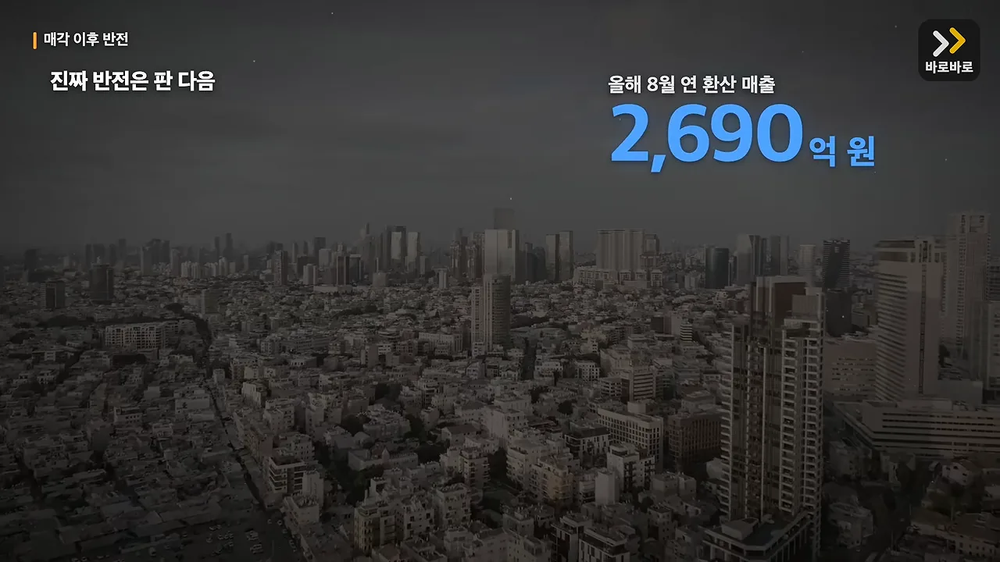
여기서도 AI 값이 문제였어요
폴시아 창업자가 손해를 보던 그 AI 값을 베이스44도 겪었어요. 영상은 매출총이익이라는 말을 꺼내요. 화면 두 번째 줄 그대로, 팔고 나서 원가만 뺀 돈이에요.
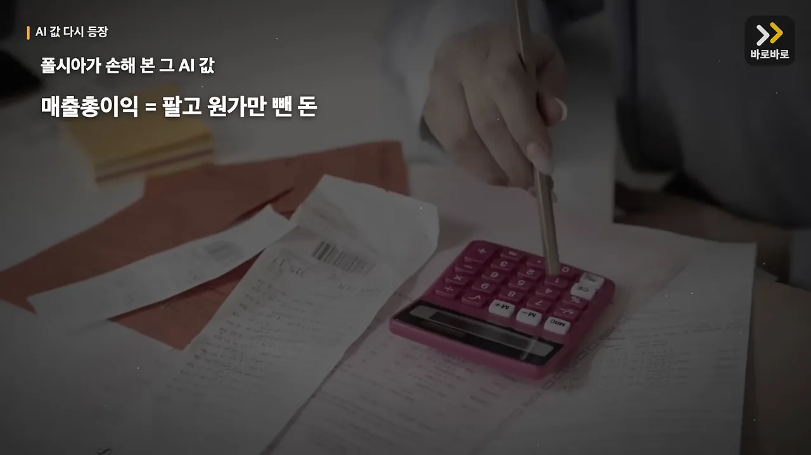
그 돈이 올해 초엔 거의 0이었어요. 다음 화면의 빨간 '0에 가까움'이 그거예요. AI 값이 그만큼 컸다는 뜻이에요. 이스라엘의 한 매체는 하반기엔 매출총이익이 매출의 절반을 넘을 거라고 봤어요.
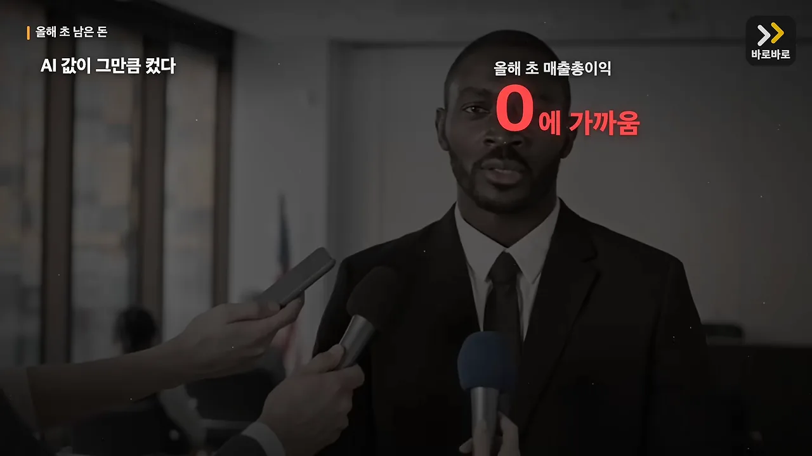
그래도 이만큼 큰 건, 창업자가 만드는 과정을 SNS에 공개했고 손님이 주로 입소문으로 모였기 때문이에요.
한국 판정: 조건이 붙어요
만드는 데까진 한국에서도 문제없어요. 막히는 건 해외에서 돈을 받는 길이에요. 폴시아 편에서 1인 사업자 자료를 낸 그 결제 회사의 사업자 가입 국가 목록에 한국이 없어요. 화면의 빨간 '돌아가는 길'처럼 미국에 회사를 따로 세우는 식으로 돌아가야 해요.
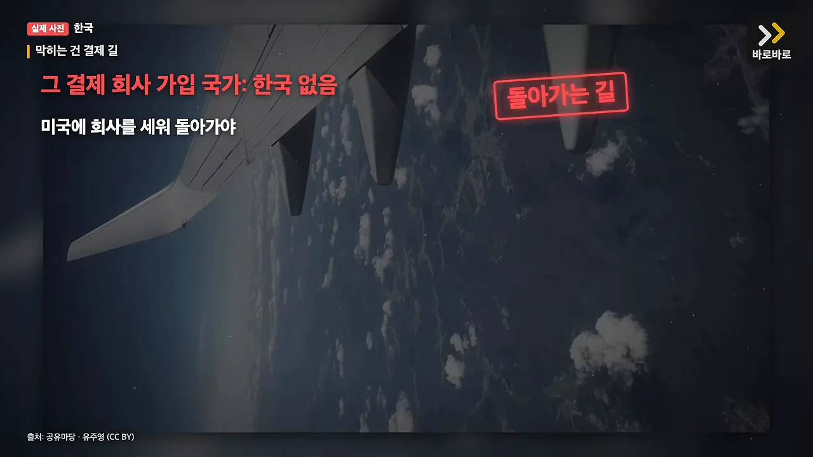
1위 메드비: 직원 2명, 그리고 경고 편지
1위는 영상 첫머리에 말한 그 회사예요. 직원 두 명이 5,400억 원어치를 판 메드비(Medvi)예요. 화면에서 1위 카드 아래 '비만약 원격 처방 중계'와 '창업 멤버 형제 단 2명'을 보면 회사가 어떤 곳인지 한눈에 들어와요. 바닥에 놓인 봉인된 편지는 곧 나올 경고 편지예요.
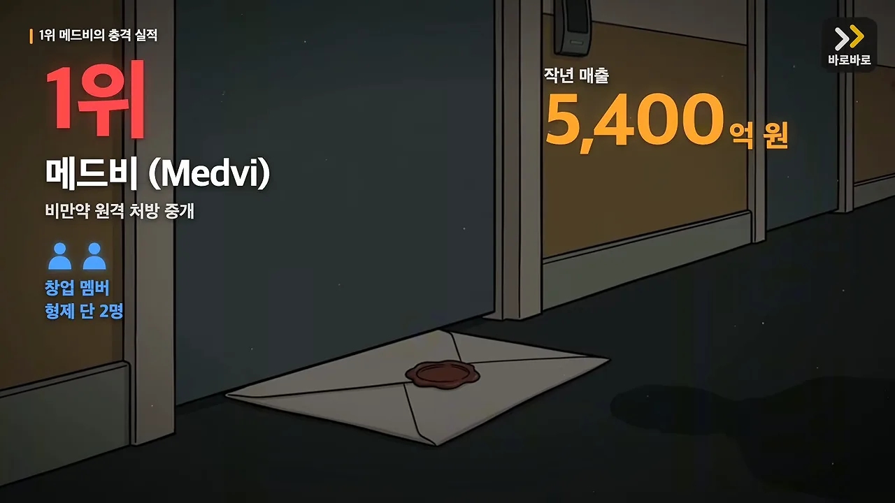
미국 식품의약국의 경고 편지
올해 2월 20일 미국 FDA(Food and Drug Administration)가 메드비에 경고 편지를 보냈어요. 메드비는 비만약 원격 처방 손님을 모으는 회사예요. 지적은 두 가지였어요.
- 남이 만든 약에 자기 이름을 붙인 일 — 약국이 섞어 만든 조제약에 메드비 이름을 붙여, 자기가 직접 만드는 것처럼 보이게 했어요.
- 광고 문구 — 유명 비만 주사와 '같은 성분'이라고 적어, 허가받은 약처럼 보이게 했어요.
6주쯤 뒤 뉴욕타임스가 메드비를 'AI로 형제 둘이 키운 회사'로 소개했어요. 그런데 그 기사엔 이 편지 얘기가 없었어요.
직원 둘이 5,394억 원을 판 숫자
기사 속 숫자부터 보면, 직원은 창업자와 동생 둘이에요. 화면 왼쪽 위의 2,690만 원이 처음 창업 자금이고, 빨간 줄 끝의 '첫 풀타임 영업 5,394억 매출'이 작년 숫자예요. 작년이 메드비가 처음으로 한 해를 꽉 채워 장사한 해였어요.
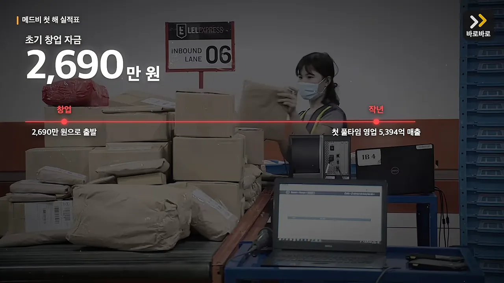
순이익도 874억 원을 남겼어요. 다음 화면의 막대가 그 비율이에요. 매출 100원어치를 팔면 16원 남짓이 남은 셈이에요. 손님은 25만 명이었고, 신문이 재무 자료를 직접 보고 쓴 숫자예요. 직원 한 명이 2,700억 원어치를 판 셈이죠.
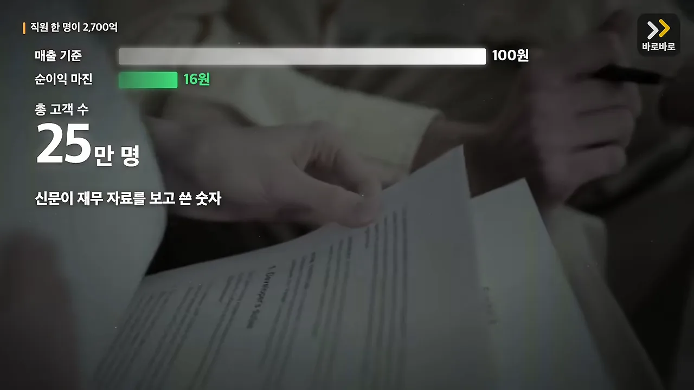
AI가 키웠다고 진료도 AI가 할까요
홈페이지와 광고는 형제가 AI 도구로 만들었어요. 글과 영상까지 여러 도구를 썼어요. 그렇다고 진료까지 AI가 하는 건 아니에요. 메드비는 스스로를 마케팅 회사라고 불러요.
| 일 | 누가 맡나요 |
|---|---|
| 홈페이지, 광고, 글, 영상 | 형제 둘이 AI 도구로 |
| 손님 모으기 | 메드비 (형제) |
| 진료 | 다른 회사 |
| 약 짓기 | 다른 회사 |
| 배송 | 다른 회사 |
광고 속 인물엔 '배우이거나 AI로 만든 사람일 수 있다'는 안내문도 붙어 있었어요. 창업자는 올해 18억 달러를 팔겠다고 내다봤어요. 작년의 네 배가 넘지만, 창업자 본인의 전망일 뿐이에요. 그런데 기사를 옮긴 한 신문은 제목에 '18억 달러짜리 회사'라고 적었어요.
한국 판정: 법에 걸려요
한국 약사법엔 전문의약품이라는 말이 나와요. 의사 처방이 있어야만 살 수 있는 약이에요. 화면 둘째 줄의 빨간 글씨처럼, 약사법 제68조 제6항은 이런 약을 광고할 수 없다고 정해 둬요. 메드비는 비만약 광고로 손님을 모았으니, 한국에선 그 첫 단계부터 막혀요.
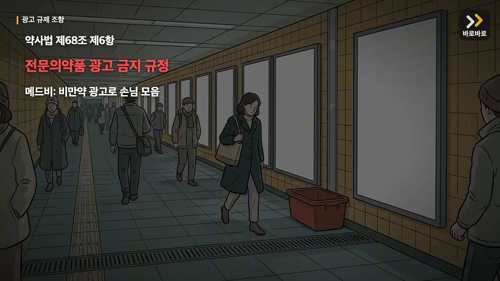
화면으로 받는 진료는 어떨까요? 한국도 올해 12월부터 비대면 진료를 제도로 시작해요. 다만 화면 둘째 줄처럼 다시 찾는 재진 환자가 중심이고, 처음 받는 진료는 지역과 처방에 제한이 붙어요. 환자와 의원이 같은 지역에 있어야 하고요.
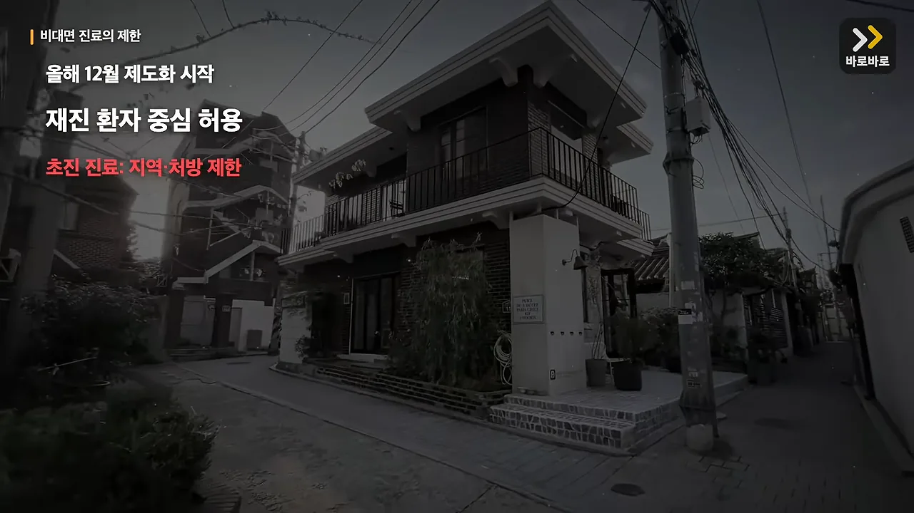
남의 면허 덕에 번 돈
메드비에도 못 베끼는 게 있긴 했어요. 의사와 약국의 면허예요. 그런데 그 면허는 메드비 것이 아니었어요. 그리고 면허는 정부가 관리해요. 화면의 세 줄이 영상의 결론이에요. 면허를 관리하는 건 정부이고, FDA가 짚은 두 가지도 결국 남이 만든 약 이야기이고, 그래서 한국에선 그대로 하면 막혀요. 맨 아래 줄처럼 미국에서도 이미 정부 경고를 받았고요.
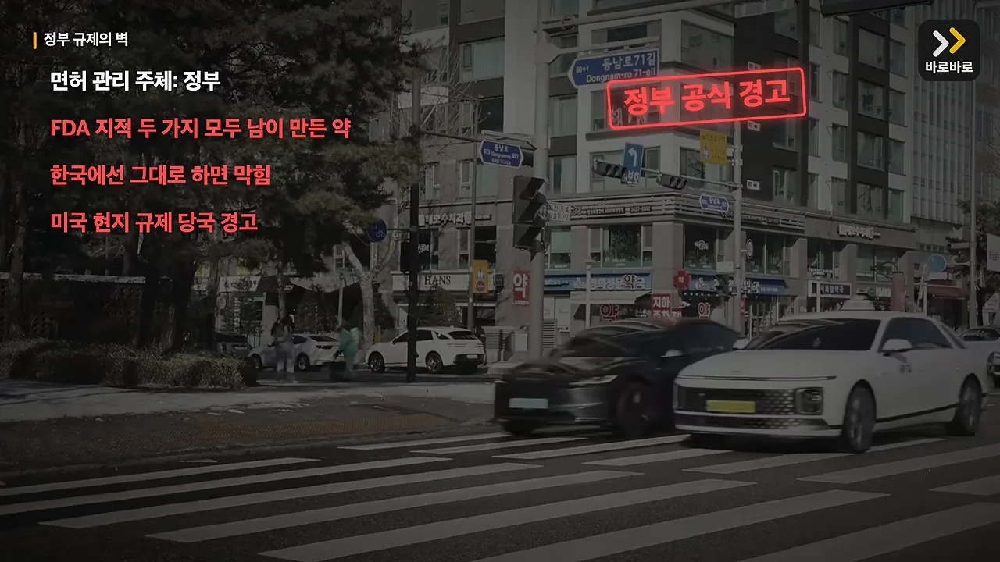
한국은 지금 어디쯤일까요
다섯 곳을 다 본 뒤 영상은 한국으로 돌아와요. 출발점은 정부가 낸 창업 통계표 한 장에 있는 이상한 숫자예요.
전체 창업은 줄었는데 정보통신업은 늘었어요
올해 8월 말 공개된 상반기 창업 통계에서 새로 생긴 회사는 56만 개가 넘었어요. 작년 상반기보다 1.5% 줄었어요. 전체가 줄었으니 AI를 쓰는 쪽 창업도 줄었을 것 같지만 거꾸로였어요. 화면 두 줄을 보면 전체 창업은 -1.5%, 정보통신업은 +59.4%예요. 작년에 열 곳이 생겼다면 올해는 16곳 가까이 생긴 셈이에요.
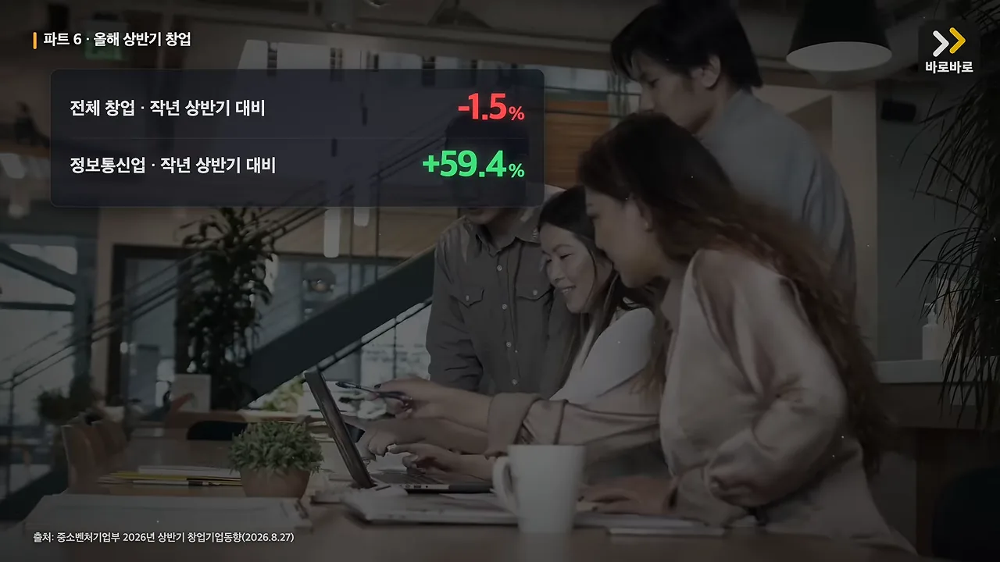
작년 연간 통계의 정부 설명도 같은 방향이에요. 기술기반 창업의 비중이 통계를 낸 뒤 가장 높았고, 그 증가를 이끈 업종은 AI를 쓰는 정보통신과 과학기술 서비스였어요.
한국의 직원 없는 사업체 116만 곳
한국에도 직원 없이 꾸리는 작은 사업체가 많아요. 정부 실태조사로는 116만 개가 넘어요. 앞서 베이스44와 비교할 때 평균 1년 순이익 3,620만 원을 남기던 바로 그 사업체들이에요.
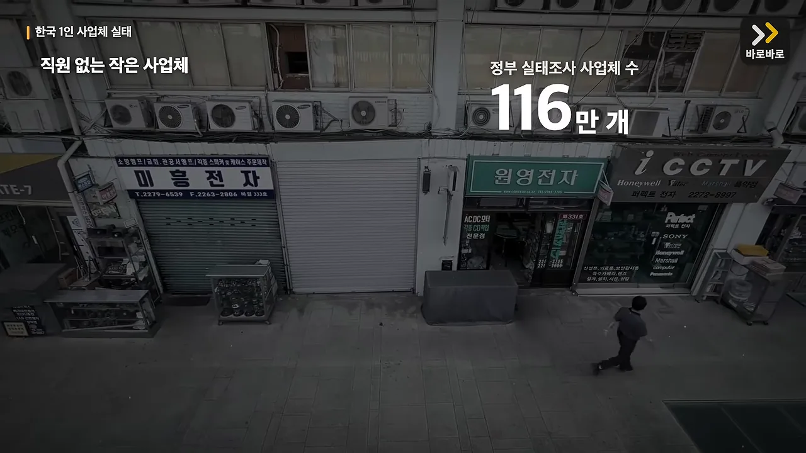
국내 최대 사례: 커넥트핏
영상이 찾은 국내 사례 중 숫자가 가장 큰 곳은 커넥트핏이에요. 알바 급여와 출퇴근을 관리해 주는 앱을 만들어요. 화면의 세 숫자가 성적표예요. 직원 5명, 연매출 10억 원, 매출 대비 이익률 30%. 한 사람당 2억 원어치를 판 셈이에요.
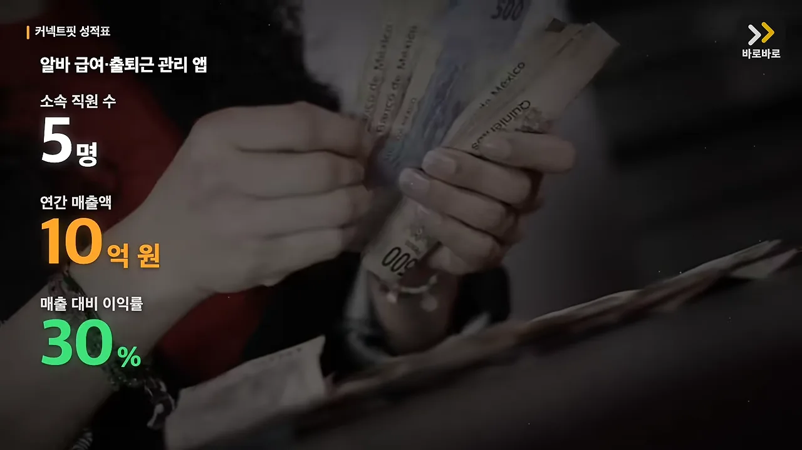
다음 화면은 운영 지표예요. 이 앱과 손잡은 사업장이 4만 곳이고, 앱은 지금까지 718번 고쳐서 내놨어요. 올해 가을 국내 경제신문이 전한 숫자예요.
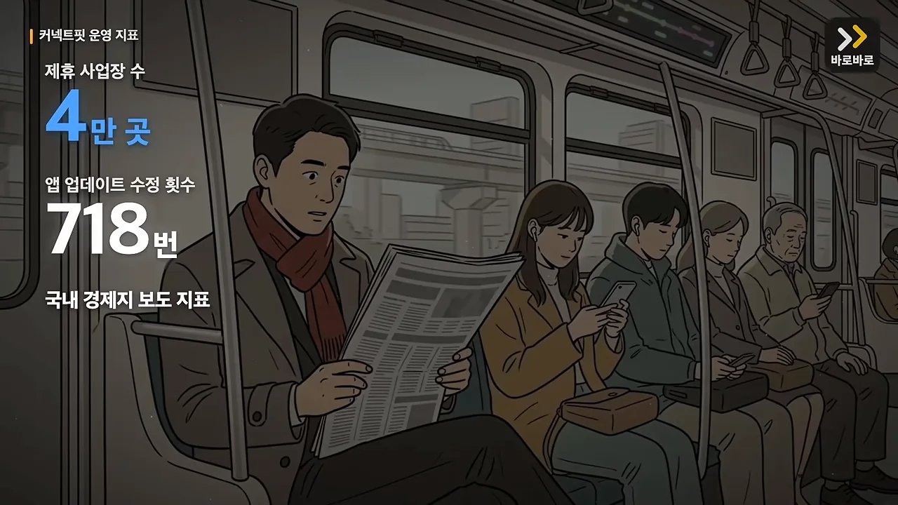
대표는 더 큰 숫자를 말해요. 화면의 짧은 주황 막대가 100억, 긴 초록 막대가 1,000억이에요. AI를 쓰면 열 명 이하 조직도 매출 100억, 나아가 1,000억까지 클 수 있다고 봐요. 영상은 이게 대표 본인의 생각이라고 분명히 해요.
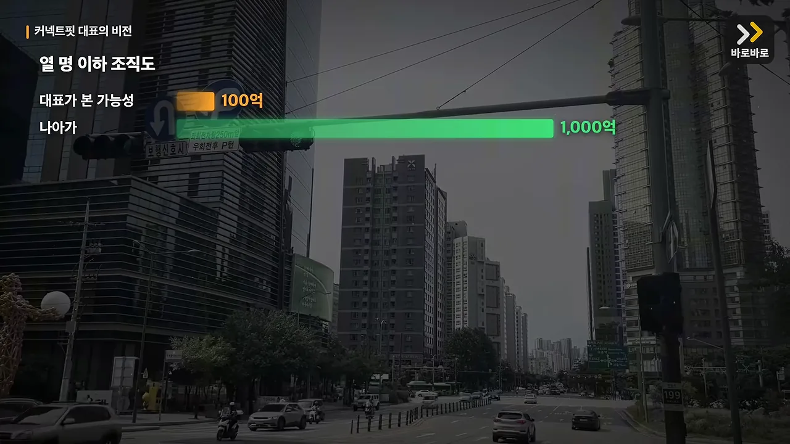
그래도 이 앱에는 못 베끼는 게 있어요. 사장님이 직접 챙겨야 하는 알바 급여 계산이라는 현장의 문제, 그리고 그동안 쌓은 수정 기록이에요. 남이 하루아침에 베끼기 어려운 것들이에요.
당장은 어렵지만 방향은 이쪽
진행자는 당장 한국에서 혼자 1천억은 어렵다고 봐요. 화면 빨간 줄처럼 미국 1위와 매출 자릿수가 두 개 넘게 차이 나니까요. 하지만 전체 창업이 줄어드는 흐름에서도 정보통신 쪽 창업은 크게 늘었으니 방향은 이미 이쪽이라고 해요. 이 화면의 '48% 가까이'는 앞 화면의 59.4%와 맞지 않아요. 내레이션은 '60% 가까이'라고 말해요.
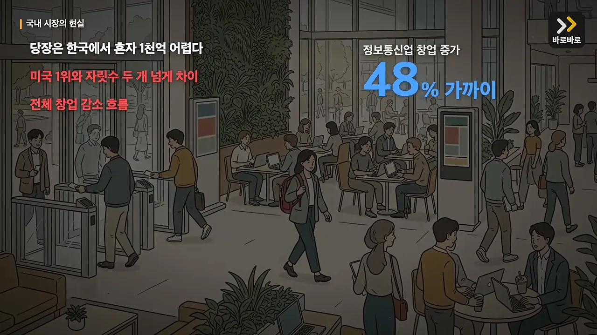
다섯 곳 판정과 확인할 세 가지
마지막으로 영상은 다섯 곳을 한국에 대 본 결과를 한데 모아요. 아래 그림은 영상이 두 화면에 나눠 보여 준 판정을 세 칸으로 합친 거예요. 칸마다 회사 이름 아래 적은 건 영상이 든 이유예요.
그대로 되는 두 곳은 피터 레벨스의 사진 서비스와 칼 AI의 앱이에요. 레벨스 쪽엔 알릴 사람이 있어야 한다는 단서가 붙어요. 조건이 붙는 두 곳은 폴시아와 베이스44로, 폴시아는 AI 값을, 베이스44는 해외 결제 길을 따져야 해요. 막히는 곳은 메드비 하나예요.
나라면 어디서 시작할까요: 확인할 세 가지
영상은 시청자가 스스로 점검할 세 가지를 남겨요. 화면 목록의 셋째 줄만 빨간색인데, 피하라는 경고라서 그래요.
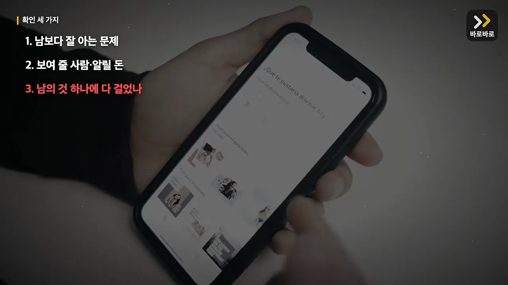
- 내가 남보다 잘 아는 귀찮은 문제가 하나 있나요?
- 만든 걸 보여 줄 사람이 있나요? 없다면 알리는 데 쓸 돈이라도 있나요?
- 남의 면허나 남의 AI 하나에 다 걸지는 않았나요?
돈을 가른 건 남이 못 베끼는 것
영상은 처음 그 회사로 돌아가요. 직원 둘에 작년 매출 5,400억 원, 하지만 한국에선 법에 걸리는 회사였어요. 다섯 곳 모두 손님에게서 실제로 돈을 받았고, 게임도 홈페이지도 광고도 AI로 금방 만들었어요. 돈을 가른 건 남이 못 베끼는 것이었어요. 레벨스에겐 따르는 사람이, 칼 AI에겐 자기가 겪은 문제가 있었어요. 메드비가 기댄 건 남의 면허여서 가장 위태로웠고요.
한국은 아직 자릿수가 작지만, 못 베끼는 건 누구에게나 하나쯤 있다고 해요. 날마다 겪는 그 귀찮은 일이요. 그래서 'AI로 혼자 월 천만 원' 같은 광고를 보면, 그 사람이 가진 것 중 남이 못 베끼는 게 뭔지부터 확인해 보라고 권해요.
만드는 건 공짜, 못 베끼는 게 돈. 한국은 아직 자릿수가 작습니다. 하지만 못 베끼는 건 누구에게나 하나쯤 있어요.
— 영상 16:41